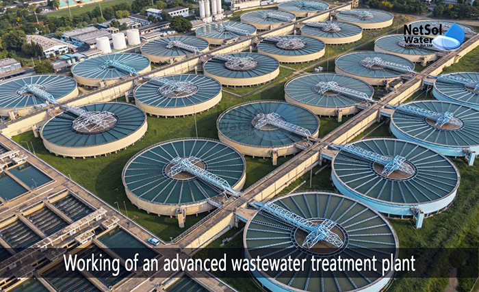
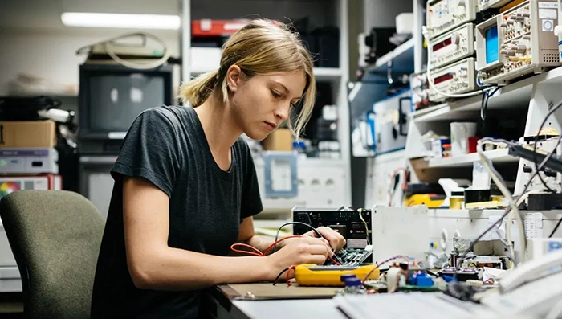
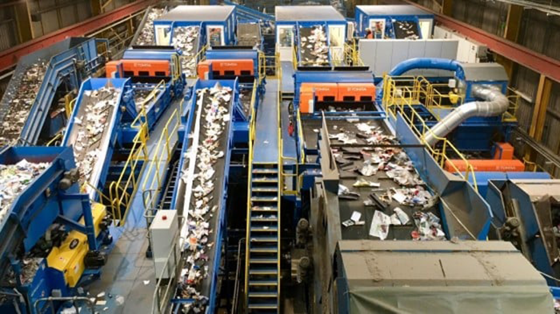
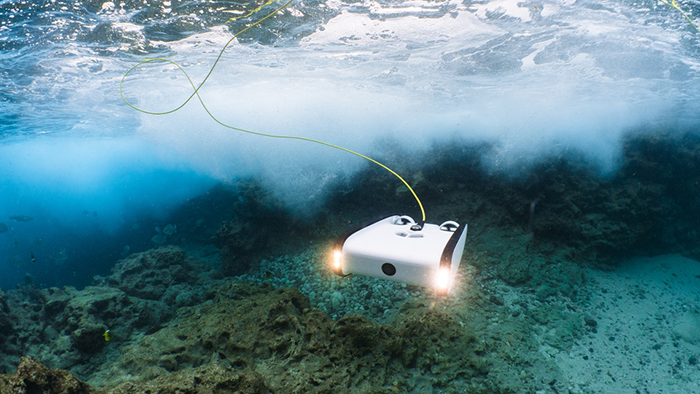

Driving Sustainable Change through Technology:
Path to Achieving UN Sustainable Development Goals
Introduction
In today's rapidly evolving world, the intersection of sustainability and technology has become pivotal in our quest to address global challenges. The United Nations' Sustainable Development Goals (SDGs) provide a universal call to action, aiming to end poverty, protect the planet, and ensure prosperity for all. Technology, with its transformative potential, is a powerful tool in achieving these goals. In this article, we explore the ways in which technology is driving sustainability and making an impact on the UN SDGs.
Sustainable Development Goals (SDGs). A Global Framework
The UN SDGs serve as a global roadmap for addressing pressing environmental, social, and economic issues. There are 17 goals in total, ranging from no poverty and zero hunger to climate action and affordable and clean energy. Let's delve into how technology plays a role in advancing these goals.

Sustainable Agriculture and Zero Hunger (SDG 2)
Sustainable agriculture practices, empowered by technology, are crucial for achieving zero hunger. Precision agriculture, IoT-driven farming, and genetically modified crops increase food production while minimizing waste.

Clean Energy for Affordable and Clean Energy (SDG 7)
Renewable energy sources such as solar, wind, and hydropower have gained momentum thanks to technological advancements. Clean energy technologies not only reduce emissions but also make energy more affordable and accessible.
Clean Water and Sanitation (SDG 6)
Water purification technologies and IoT-based monitoring systems help ensure clean water and sanitation, reducing waterborne diseases and promoting access to safe drinking water.
Gender Equality (SDG 5)
Technology can be a powerful enabler of gender equality by providing access to education, healthcare, and economic opportunities for women and girls, bridging the digital gender gap.
Quality Education (SDG 4)
E-learning platforms and digital resources enable quality education for all, breaking down barriers and making learning accessible anytime, anywhere.
Sustainable Cities and Communities (SDG 11)
Smart cities, equipped with IoT infrastructure, contribute to sustainable urban development, reducing energy consumption, traffic congestion, and waste generation.

Climate Action (SDG 13)
innovations play a significant role in mitigating climate change. Renewable energy, electric vehicles, and carbon capture and storage are key tools in combating climate change.
Responsible Consumption and Production (SDG 12)
solutions promote responsible consumption and production by tracking and reducing resource waste, recycling materials, and optimizing supply chains.
Life Below Water and Life on Land (SDGs 14 and 15)
Innovative technologies like satellite monitoring and underwater drones help protect marine ecosystems and biodiversity on land, preserving life below water and on land.
Conclusion:
Technology is a key driver in our journey toward a more sustainable and equitable world. By embracing innovative solutions, we can make significant progress in achieving the UN SDGs. As we've seen, technology's impact is far-reaching, from clean energy to education, gender equality to climate action. These examples illustrate the tangible progress we can make by leveraging technology in our pursuit of a better future.
As we continue to explore the endless possibilities at the intersection of sustainability and technology, we move closer to fulfilling the promise of the UN Sustainable Development Goals, creating a brighter and more sustainable future for all.